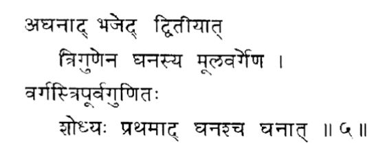

公元前321年，旃多罗笈多·毛里亚（Chandragupta Maurya，又被称为月护王）率军击溃马其顿占领军，建立了孔雀王朝。有人认为，孔雀这个姓说明他的出身为宫廷饲养孔雀的家族。旃多罗笈多领导了驱逐亚历山大残部的战斗，并推翻了难陀王朝的统治。孔雀王朝的第三代国王庇耶陀西，也就是阿育王（Ashoka，约公元前304—公元前232）将孔雀帝国的版图扩大到了顶峰。他以武功统一印度次大陆，这片疆域远远大于与他同时的秦始皇（公元前259—公元前210）统一的中国。与秦嬴政不同的是，阿育王后来皈依佛门，改为强调宽容和非暴力主义，同时大力资助宗教，对佛教、婆罗门教和耆那教都给以慷慨捐助。他统治孔雀王朝长达四十一年。
阿育王死后，摩揭陀走向衰落。后又经过巽伽、甘婆两朝，印度大部分地区被笈多帝国统一。笈多王朝定都吠舍离（即今木扎法普尔县的巴塞尔），从公元320年起传了二百多年，缔造了印度历史上的黄金时代。
华氏城虽然丢掉了首都的头衔，但并没有失去昔日的繁华。它是笈多王朝的学术中心，古老而著名的那烂陀寺就坐落在附近。那烂陀又是世界上最古老的大学之一，它的图书馆拥有当时世界上最多的佛学经典，号称真理之山。兴盛时期，校园里有上万名学生，两千多名教师，每日同时开设一百多个讲坛，授课内容包括大乘佛典、天文学、数学、医药等等，丰富多彩。
大约是在5世纪末的一天，一个名叫阿耶波多的少年来到了华氏城。
阿耶波多（Aryabhata，公元476—公元550）出生在位于讷尔默达河与戈达瓦里河之间的一个叫作阿萨玛卡的地方。十几岁的阿耶波多来到华氏城接受高等教育，后来因为学识渊博、思维聪慧，便留在那烂陀担任教职，同时负责天文台的工作。他主要从事天文学研究、著作等，他已经意识到地球是围绕着太阳转的，并且发明了好几种天文仪器。不过让他名垂青史的是他撰写的《阿耶波多历书》。
从外表看，《阿耶波多历书》很难被称为一本书。它只有一百二十三句，除去引言和背景介绍，只剩下一百零八句，用的是诗的语言。可是，每一句都是一个天文或数学问题的解法，其内容相当复杂难懂。哈佛大学语言学教授克拉克（Walter E. Clark，公元1881—公元1960）认为，这一百单八句诗文应该是另外一套详细著作的总结和缩写。首先，它利用梵语的母音和子音设定一个当时最先进的计数方法，可以非常容易地从一数到十的十八次方（1018）。他在代数、几何、三角等方面都有重要的论述。阿耶波多计算出地球的周长为4967由旬。由旬是古印度的长度单位，原来指的是公牛挂轭行走一天的旅程。和古希腊、古埃及的长度单位斯塔迪亚一样，今天我们对这个长度单位也很模糊。唐玄奘在《大唐西域记》中说，旧传一由旬为四十里，印度国俗为三十里，佛教为十六里。如果采用佛教由旬（16里=8公里）来计算的话，那么阿耶波多计算的地球周长就是39 746公里，这同我们今天所知的地球周长惊人地接近。另外，跟当时西方流行的观念完全相反，他相信在地表看到的天体运转是由于地球本身的自转，并由此计算出自转角速度：差不多每四秒钟转一分角度，每23小时56分加4.1秒转一周。他认为月亮的光来自对阳光的反射，并且正确地解释了日食和月食的原因。自他之后，阿耶波多天文学在印度成为主流。
对于开立方，阿耶波多在《阿耶波多历书》里只用了一句话（图18）：

图 18
翻译这句梵语可不容易。在给出满页纸的注释和翻译之后，克拉克教授干脆直接用例子来说明。阿耶波多明确地把被开立方的数字按照10的立方（103）的形式分组，把每一组里对应于103的那位数称为立方数，它后面的两位数称为第一和第二非立方数。还是用1 860 867这个数来当例子。这个数字被分成三组（这种现代的数字表示方法应该归功于阿耶波多），每一组右边的第一个数字是“立方数”，它左边的两个数分别是第一和第二非立方数。所以，7、0、1都是立方数，两个6是第一非立方数，两个8是第二非立方数。让我们回头看看后面附录一中用《九章算术》里的方法所处理过的方程（1a），这次用阿耶波多的方法来开立方，详情见附录二。对比之下，我们可以看到阿耶波多的原理和早他四五百年的《九章算术》的开方法很类似，不过更为简捷清晰。看来他已经接近解决三次方程的问题了。